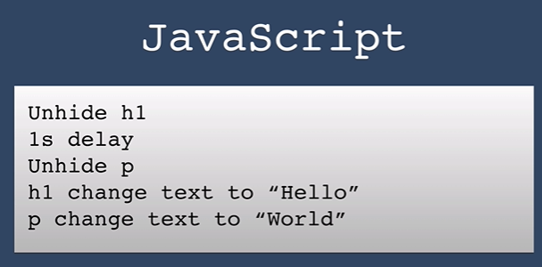
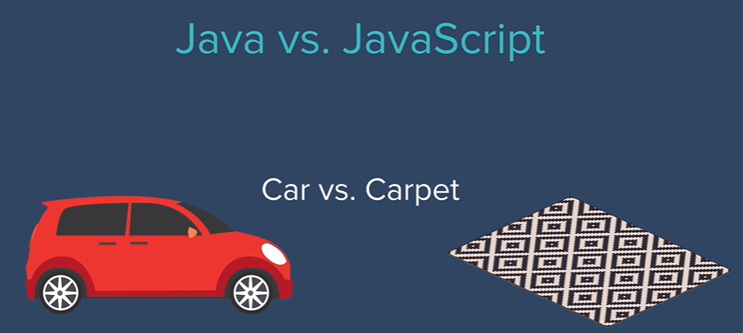
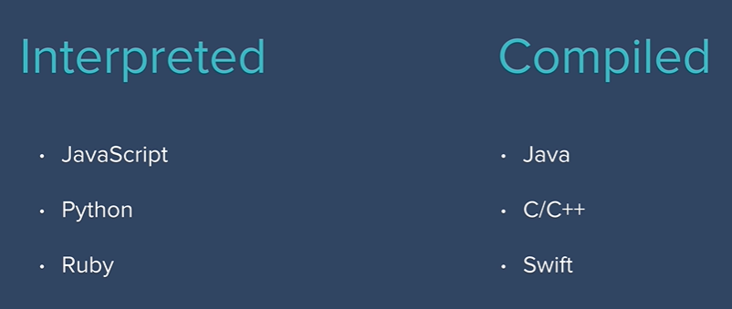

Introduction to JavaScript
- Before chrome or firefox, safari or internet explorer, there was a browser called mosaic.
- Mosaic was something that Marc worked on even while he was at university.
- When he finished university, he behan to work on Netscape.
- At one point Netscape navigator held over 80% of the market share in terms of browser usage.
- There was a huge browser war between Netscape and Internet Explorer.
- Netscape communications company resulting in ending up.
- But a lot of that technology was transported and incorporated into the modern day firefox.
- In 1995
- HTML websites were all form and no function.
- Website need functionality such as retrieving a piece of data that you searched for, just calculating something or converting between different units.
- The website had to send that request to the data server and it was in the data server where all of this computation and business logic happened and then it would return the web page that contained the new data.
- Netscape envisioned a future where the web was more dynamic with animations and real-time user interation.
- In order to enable this we needed to take away the server and have the code be able to run on the browser.
- In order to do this, they wanted to create a small scripting language.
- The requirements were that this language had to be simple and had to be really easy so that even non-developers and non-programmers could use it to add functionality to websites.
- So, Netscape contacted Brendan Eich to create that programming language.
- Brendan with the team, was able to create JavaScript within 10 Days.
- Side-effect of diabling JavaScript
- We end up having ad-free website
- Websites like YouTube or Netflix won't even load up.
- LiveScript
- When Brendan created JavaScript, it was called LiveScript and then people at microsoft decided to try and reverse engineer the program and they ended up with something called JScript.
- There were all slightly different versions of JavaScript that was being run on the web and it started to get confusing.
- Europeans decided to standardize the language as ECMAScript.
- ECMAScript stands for : European Computer Manufacturers Association Script.
- Different versions of JavaScript not reffered to as JS5 or JS6 but as ES6 OR ES7.
- ES comes from ECMAScript.
- Why is it called as JavaScript and what does Script stands for?
- Just as scripts in plays where it tells the actors what they should do, the scripting languages does much same the same thing with regards to websites.
- In world of web development, the script is JavaScript and the actors are HTML elements.

- JavaScript is called JavaScript because in the 90s the word Java was about as hot as the word blockchain in today's world.
- Java vs. JavaScript

- JavaScript is an interpreted programming language where as Java is a compiled language.

- In olden days, interpreted languages tend to be seen as almost like toy languages as they were very slow and had to execute all the instructions line by line.
- Compiled languages were seen as more serious languages and
- Modern JavaScript
- It's used in all sorts of places whereas traditionally it was a front-end language that was meant to add some animations to wesite or allow user interation.
- But now JavaScript can be seen in frameworks ranging from the front end to back end and everything in between frontend and backend.
- JavaScript is one language that is supported by all of the major browsers while we can use other languages that can be compiled into JavaScript and run on the browser.
- What is best programming language we should learn first?
- Swift for iOS app
- Java for Android App
- JavaScript for Webapps and Websites.